) increase, y() will have a higher value => SmallDB algorithm will keep a smaller accuracy than Laplace mechanism in this setting. After analysis, we choose 3 most representative conditions to show the relationship.
) increase, y() will have a higher value => SmallDB algorithm will keep a smaller accuracy than Laplace mechanism in this setting. After analysis, we choose 3 most representative conditions to show the relationship. Distributional/Differential Privacy and Laplace vs SmallDB
Thomas Wang, Fulai Lu, Royce Zheng
Abstract: In this paper, we will explore the relationship between distributional privacy and differential privacy, and show the proof that distributional privacy is strictly stronger than differential privacy. We will explain why SmallDB, which is the instantiation of Exponential Mechanism, satisfies both distributional privacy and differential privacy, but Laplce also satisfies differential privacy depending on its query. Finally, we'll show at the end with a graph how the Laplace Mechanism and SmallDB Mechanism trade off accuracy and privacy. The graph will also show how these mechanisms relate to one another, giving information that will help to decide which strategy is best depending mainly on the size of the database, dimension of query and choice of privacy value.
Introduction:
After learning about data privacy in this quarter, I am thinking about if there is a mechanism which can generate a new database (D`) from original database (D) and also have a high utility when used in a query, meanwhile, the mechanism will also give a really good privacy guarantee since all data in D` are synthetic. After discussion with our data privacy class professor, we know that there is a privacy definition which is called distributional privacy is what I am thinking about. So, the paper will focus on the definition of distributional privacy in the first part. Since it is crucial to comprehend the connection between distributional privacy and differential privacy discussed in [1], the paper will include a brief recap of differential privacy. Additionally, we will concentrate on two frequently employed mechanisms: the SmallDB Mechanism for distributional privacy and the Laplace Mechanism for differential privacy. Our primary focus in this paper will be on analyzing these elements due to the complexity involved in analyzing mechanisms since there are various setting elements. We intend to delve deeply into the complexities of mechanism design, focusing on the critical elements that affect how well and effectively mechanisms protect privacy while keeping a high accuracy.
Overall, we will have 3 sections following, the first section explaining distributional privacy and discussing the relationship between them. Second section will show the proof of their relationship. Third section will discuss the tradeoff of accuracy and privacy in Laplace and SmallDB mechanisms.
Section One
Differential privacy
A mechanism for privatizing a database, whether interactive or non-interactive, is considered to satisfy differential privacy when the inclusion or exclusion of a single element in the database does not significantly alter the likelihood of any possible outcome produced by the privatization mechanism.
Formal Definition (from the paper)
For a database D, let A be a database access mechanism. For an interactive mechanism, we will say that A(D, Q) induces a distribution over outputs for each query Q. For a non-interactive mechanism, we will say that A(D) induces a distribution over outputs.
We say that an interactive database access mechanism A satisfies α-differential privacy if for all neighboring databases D1 and D2(differing in only a single element), for all queries Q, and for all outputs x,
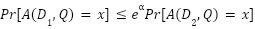.
We say that a non-interactive database sanitization mechanism A satisfies α-differential privacy if for all neighboring databases D1 and D2, and for all sanitized outputs 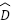,
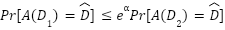.
Distributional privacy
A database privatization mechanism is said to satisfy distributional privacy if, when considering a distribution D that represents the underlying data points, the mechanism ensures that with high probability, selecting a completely new database from D will not significantly alter the probability of any possible outcome produced by the privatization mechanism.
Formal Definition (From the paper)
We say that an interactive database mechanism A satisfies (α, β)-distributional privacy if for any distribution over database elements D, with probability 1 − β, two databases D1 and D2 consisting of n elements drawn without replacement from D, for any query Q and output x satisfies
.
Similarly, for non-interactive mechanisms, a mechanism A satisfies (α, β)-distributional privacy if for any distribution over database elements D, with probability 1 − β, two databases D1 and D2 consisting of n elements drawn without replacement from D, and for all sanitized outputs ,
.
Relationships
The relative strength and relationship between differential privacy and distributional privacy are not initially clear. It is uncertain if one notion is stronger than the other, if they are equivalent, or if they are distinct concepts. On one hand, differential privacy guarantees privacy when comparing databases D1 and D2 that differ by only a single element. In contrast, distributional privacy can provide guarantees even when D1 and D2 differ in all their elements. However, distributional privacy assumes that the elements in D1 and D2 are drawn from a distribution D and allows for privacy violations with a small probability β (although exponentially small). This means that two databases drawn from the same distribution could potentially be completely different with some probability. Despite these differences, the paper gives a proof that distributional privacy is strictly stronger than differential privacy. And it works for both interactive and non-interactive mechanisms with minimal modifications required.
Section TWO
Global sensitivity = 1/n.
Exponential mechanism proof on ε-differential privacy / (α, β)- distributional privacy :
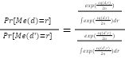
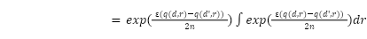
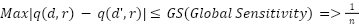
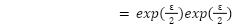
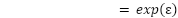
SmallDB is an algorithm which samples a small database using an exponential mechanism. Since SmallDB is an instantiation of the exponential mechanism, it also preserves (α, β)- distributional privacy. According to Theorem 7.1 [ A Learning Theory..], SmallDB also satisfies α-differential privacy when β < (1/n2), n is the size of the database.
Proof: Two databases neighboring database D1 and D2, they have the same size n, with only differing a single element “x”. Let D be the uniform distribution over set D1 U x. Now, we want to find the new D1` and D2` which satisfy {D1` , D2`} = {D1, D2}, The combination of D1` and D2` with size n elements from set {D1 U x} have total 10 different combinations which is the size n, it’s the global sensitivity 1/n in this condition. Each combination also has 1/n + 1/n choices, since D1` and D2` can exchange their name. So the probability it satisfies {D1` , D2`} = {D1, D2} is 2/n2. Now dividing the probability by 2, we can get the β for a single database which is 1/n2, so, as long as β is o(1/n2), the mechanism will certainly satisfy the α differential privacy. Therefore, for all mechanisms we can apply Theorem 7.1 to show it also satisfies differential privacy.
Example :
< D1 U X > = 1 2 3 4 5 6 7 8 9 10 X
< D1 > = 1 2 3 4 5 6 7 8 9 10
< D2 > = 1 2 3 4 5 6 7 8 9 X
But, some mechanisms, for example Laplace, satisfy α differential privacy but not distributional privacy. Global sensitivity = 1/n
For a database D in {0,1}n, define the query
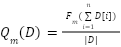
Proof:
Database: D = {0,1}n, Query: Q = Q2/α. , |D| = n
Mechanism: A(D,Qi) = Qi(D) + Z which Z ~ Lap(Sensitivity/α) = > Lap(1/(αn)) which has α differential privacy for any i. Now draw two databases: D1,D2 which are neighboring databases without replacement. Since the mechanism satisfy α differential privacy, 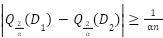
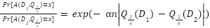
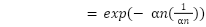
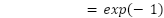
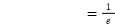
Which do not satisfy 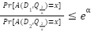.
The Laplace mechanism is a method in differential privacy that adds Laplacian noise to the results of a query. The Laplace mechanism is straightforward to implement and allows the data analyst to control the amount of noise added by tuning the privacy parameter, α. This privacy parameter controls the tradeoff between privacy and accuracy; higher values of α increase the level of privacy but decrease the accuracy of query results because more noise is added.
Section Three
Assume the number of queries = k , global sensitivity = 1/n. Then, the accuracy equation:
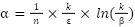
SmallDB accuracy with ε-differential privacy:
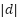 => sizes of type of data in database
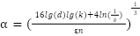
The relationship graph
Explain the graph(with current setting):
When n=10, β=0.05, and k=1. We can see that Laplace mechanism and smallDB has the same accuracy when(x in the graph)=0.15. As 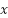 () increase, y() will have a higher value => SmallDB algorithm will keep a smaller accuracy than Laplace mechanism in this setting. After analysis, we choose 3 most representative conditions to show the relationship.
1st:In addition, the accuracy of each mechanism will also change according to sensitivity and dimension of queries.
For example, When n=10, β=0.05
Change variable: k=25(change to larger dimensions of queries)
Clearly, SmallDB will have a higher accuracy than Laplace, so we can know that if the sensitivity and size of the database does not change, higher dimension of queries will lower the accuracy of the Laplace mechanism. So SmallDB will be a better choice when deal with large dimensions of queries.
2ed:When β=0.05, and k=1
Change variable: n=1000
The Laplace mechanism will have better accuracy than SmallDB as the size of the database increases . Then, the Laplace mechanism will be a better choice.
3rd: In reality, the condition is complex, so value is also important when choosing a different mechanism. In the below graph:
If both of n = 1000, k = 120, then value will be really important when choosing a mechanism which has higher accuracy for example:
< 2.08 = > SmallDB
> 2.08 = > Laplace mechanism
Conclusion:
The relationship between privacy and accuracy in privacy-preserving mechanisms can be analyzed by examining graphs and conducting thorough analysis. In our analysis, larger size of database will enhance the accuracy of Laplace Mechanism, and higher dimension of queries will enhance the accuracy of SmallDB Mechanism. For more complex condition the choice of will be important, which prompts the question of whether there exists an explicit formula or proportion that establishes a link between the size of the database and the dimension of the query. Such a formula would allow us to make informed assumptions, such as SmallDB being superior to the Laplace mechanism when the proportion (p = n/k) is less than 1, maybe for a normal epsilon value range of 1-10. To gain a quantitative understanding and facilitate the selection of the most suitable mechanism based on specific database sizes, query dimensions, and privacy requirements, we are actively seeking such a formula. Additionally, it would be valuable to explore whether other mechanisms, like the Gaussian mechanism, can also be compared and formulated in a similar manner.
Thanks so much for the help from our Professor, Professor Sara Krehbiel.
Reference:
Blum, Avrim and Ligett, Katrina and Roth, Aaron (2008) A learning theory approach to non-interactive database privacy. - https://www.cs.cmu.edu/~avrim/Papers/privacy.pdf